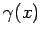
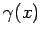

Inhalt Index DeskTop Bronstein

 Dynamische Systeme und Chaos Gewöhnliche Differentialgleichungen und Abbildungen Dynamische Systeme Grundbegriffe
Dynamische Systeme und Chaos Gewöhnliche Differentialgleichungen und Abbildungen Dynamische Systeme Grundbegriffe


Ein dynamisches System ist ein mathematisches Objekt zur Beschreibung der Zeitentwicklung physikalischer, biologischer und anderer real existierender Systeme. Es wird definiert durch einen Phasenraum  , der im weiteren oft der , eine Teilmenge davon oder ein metrischer Raum ist, und eine einparametrige Familie von Abbildungen
, der im weiteren oft der , eine Teilmenge davon oder ein metrischer Raum ist, und eine einparametrige Familie von Abbildungen  , wobei der Parameter t (Zeit) aus
, wobei der Parameter t (Zeit) aus  bzw.
bzw.  (zeitkontinuierlich) oder
(zeitkontinuierlich) oder  bzw. (zeitdiskret) ist. Für beliebiges
bzw. (zeitdiskret) ist. Für beliebiges  muß dabei
muß dabei
Im weiteren wird die Zeitmenge mit  bezeichnet. Dabei kann oder
bezeichnet. Dabei kann oder  sein. Ist , so nennt man das dynamische System auch Fluß(Semifluß). Da bei und wegen a) und b) für jedes
sein. Ist , so nennt man das dynamische System auch Fluß(Semifluß). Da bei und wegen a) und b) für jedes  neben
neben  auch die inverse Abbildung existiert, spricht man hier von invertierbaren dynamischen Systemen.
auch die inverse Abbildung existiert, spricht man hier von invertierbaren dynamischen Systemen.
Ist das dynamische System nicht invertierbar, dann versteht man für eine beliebige Menge M und beliebiges t > 0 unter das Urbild von A bezüglich , d.h. die Menge . Ist für jedes die Abbildung stetig bzw. k-mal stetig differenzierbar (dabei sei  ), so heißt das dynamische System stetig bzw. Ck-glatt.
), so heißt das dynamische System stetig bzw. Ck-glatt.
Für beliebiges festes  definiert die Abbildung eine Bewegung des dynamischen Systems mit Anfang x zur Zeit
definiert die Abbildung eine Bewegung des dynamischen Systems mit Anfang x zur Zeit  . Das Bild  einer Bewegung mit Anfang x ist der Orbit (oder die Trajektorie) durch
. Das Bild  einer Bewegung mit Anfang x ist der Orbit (oder die Trajektorie) durch  , d.h. . Analog wird der positive Semiorbit durch x als und, falls oder ist, der negative Semiorbit durch x als definiert.
, d.h. . Analog wird der positive Semiorbit durch x als und, falls oder ist, der negative Semiorbit durch x als definiert.
Der Orbit heißt Ruhelage, wenn ist, und T-periodisch, wenn ein existiert, so daß für alle  und die kleinste positive Zahl mit dieser Eigenschaft ist. Die Zahl T heißt Periode.
und die kleinste positive Zahl mit dieser Eigenschaft ist. Die Zahl T heißt Periode.